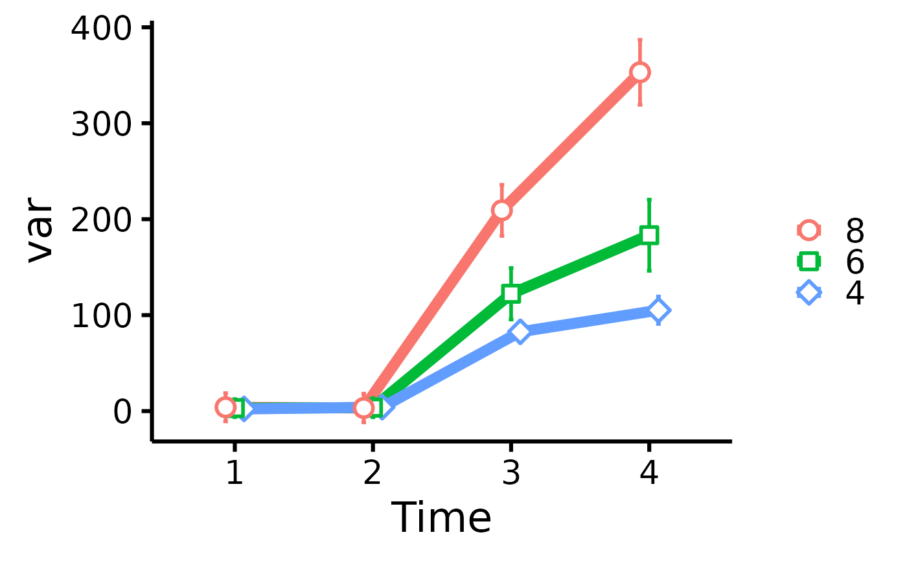

Easy scatter plots over multiple times (T1, T2, T3)
Source:R/plot_means_over_time.R
plot_means_over_time.RdMake nice scatter plots over multiple times (T1, T2, T3) easily.
Usage
plot_means_over_time(
data,
response,
group,
error_bars = TRUE,
ytitle = NULL,
print_table = FALSE,
verbose = FALSE
)Arguments
- data
The data frame.
- response
The dependent variable to be plotted (e.g.,
c("variable_T1", "variable_T2", "variable_T3"), etc.).- group
The group by which to plot the variable
- error_bars
Logical, whether to include 95% confidence intervals for means.
- ytitle
An optional x-axis label, if desired. If
NULL, will take the variable name of the first variable inresponse, and keep only the part of the string before an underscore or period.- print_table
Logical, whether to also print the computed table.
- verbose
Logical, whether to also print a note regarding the meaning of the error bars.
Details
Error bars are calculated using the method of Morey (2008) through
Rmisc::summarySEwithin(), but raw means are plotted instead of the normed
means. For more information, visit:
http://www.cookbook-r.com/Graphs/Plotting_means_and_error_bars_(ggplot2).
References
Morey, R. D. (2008). Confidence intervals from normalized data: A correction to Cousineau (2005). Tutorials in Quantitative Methods for Psychology, 4(2), 61-64. doi:10.20982/tqmp.04.2.p061
Examples
plot_means_over_time(
data = mtcars,
response = names(mtcars)[3:6],
group = "cyl"
)
